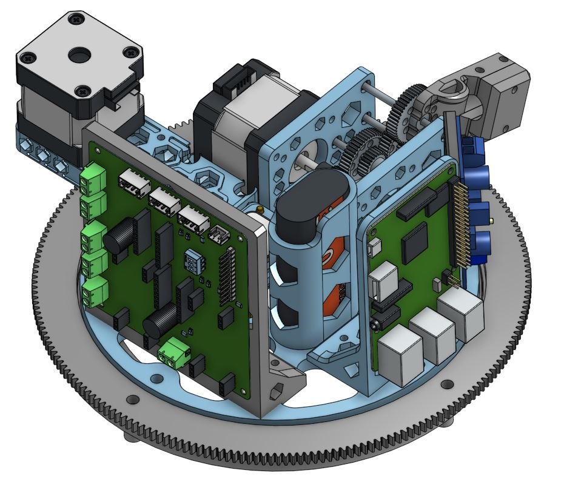
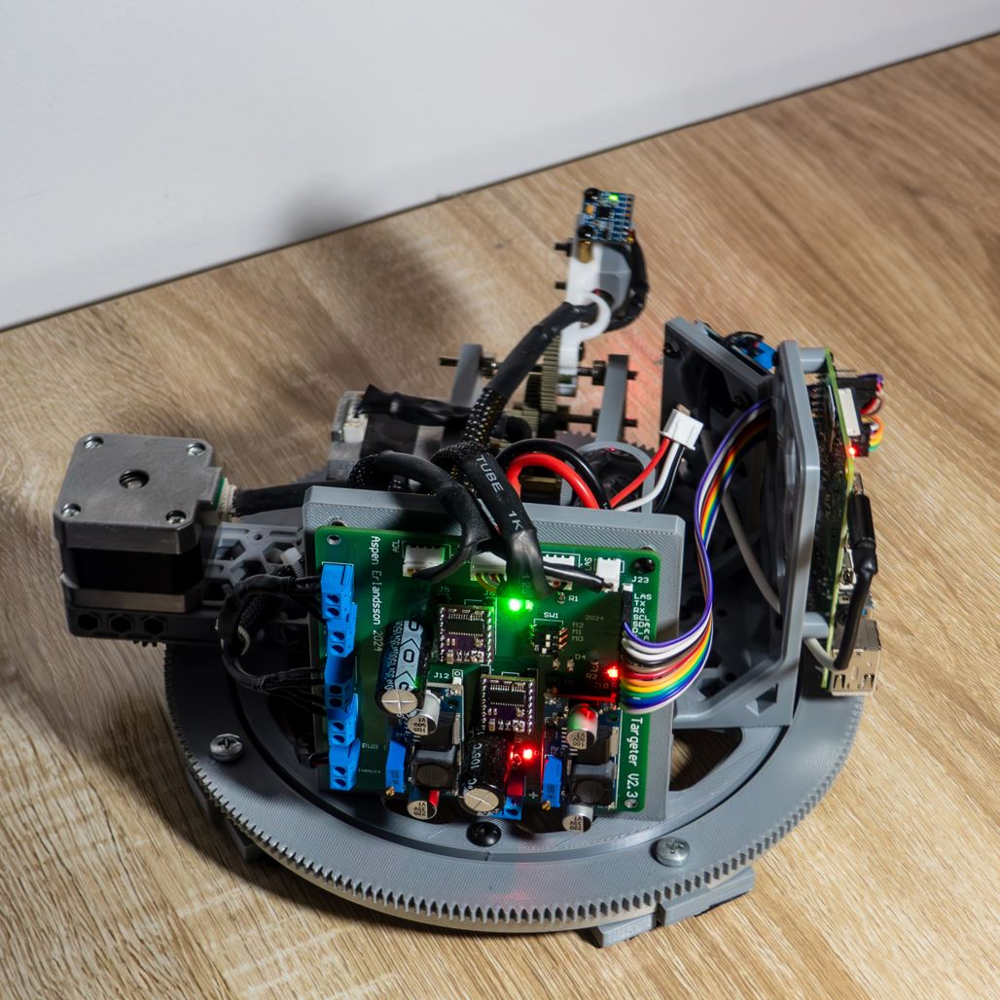
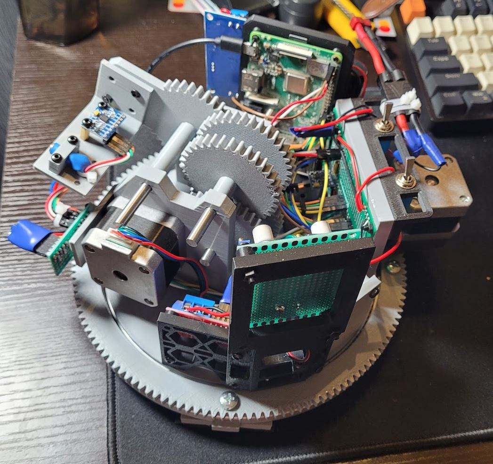
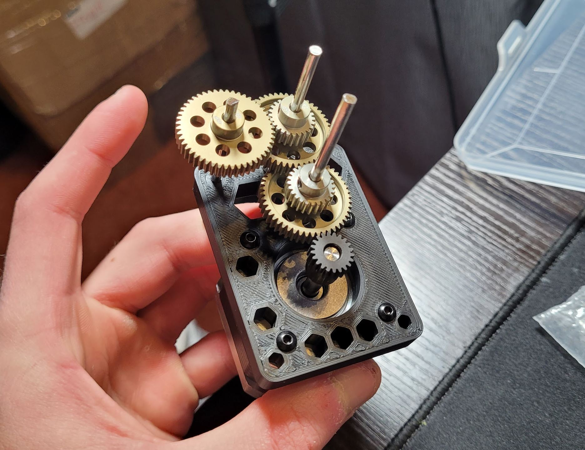
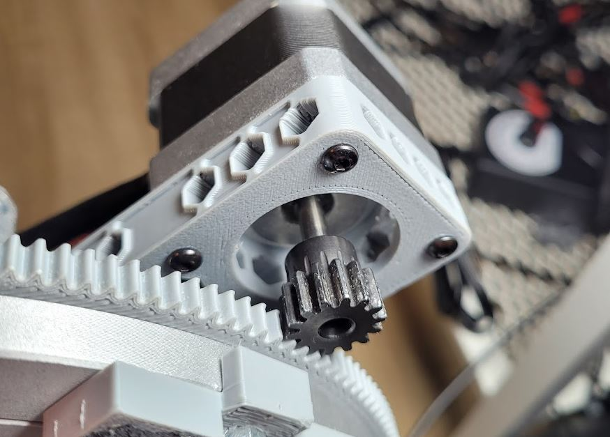
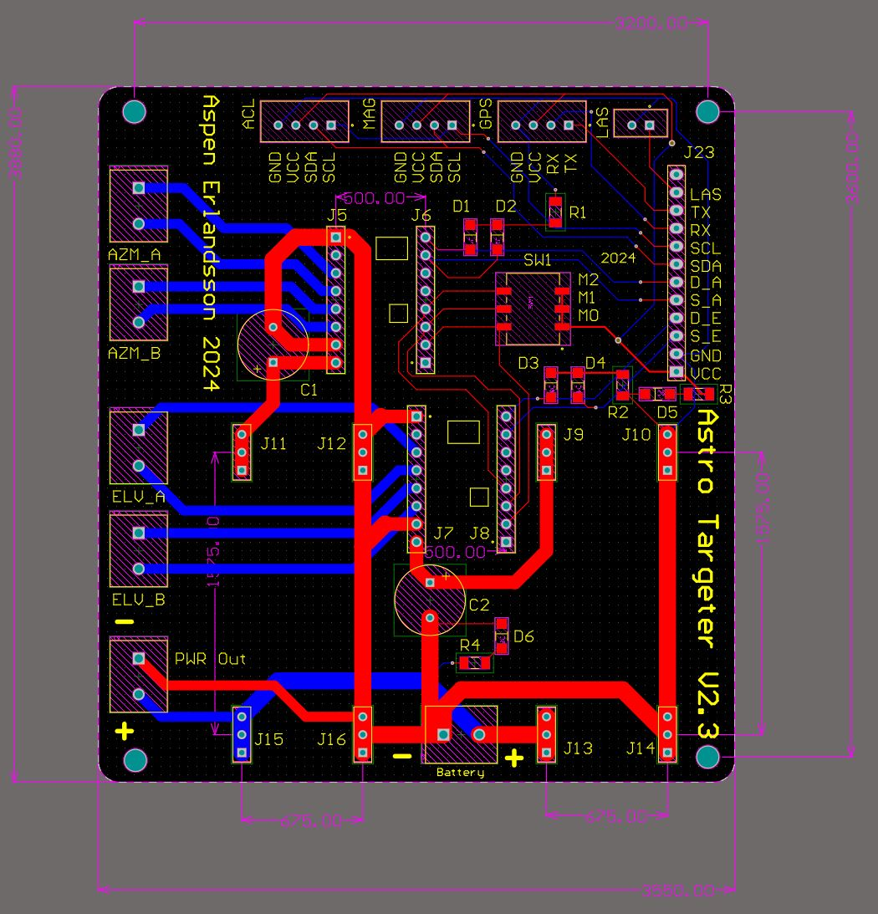
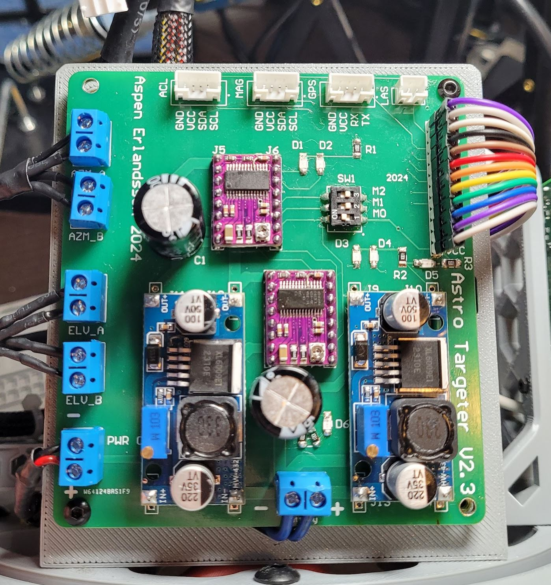
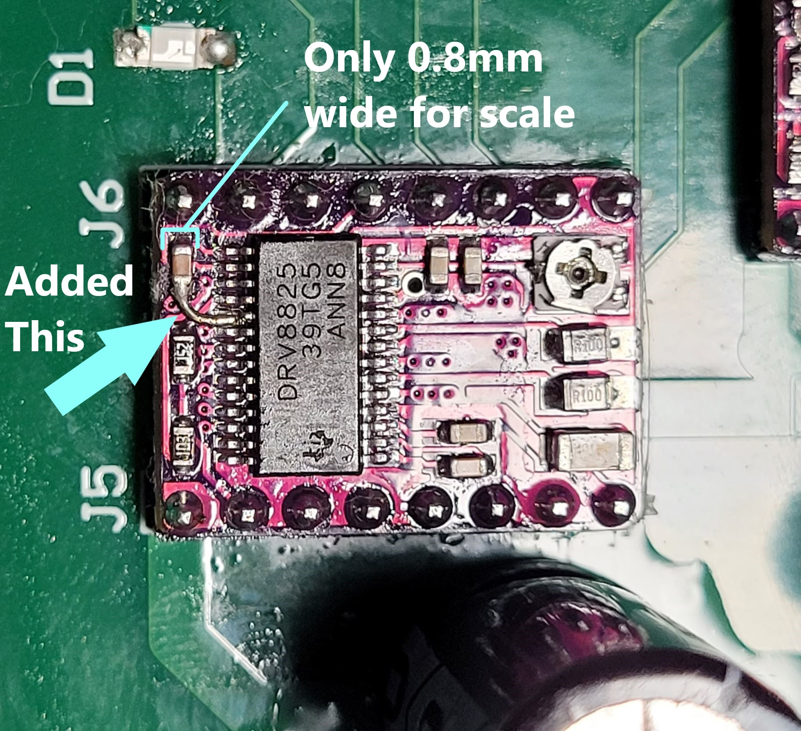
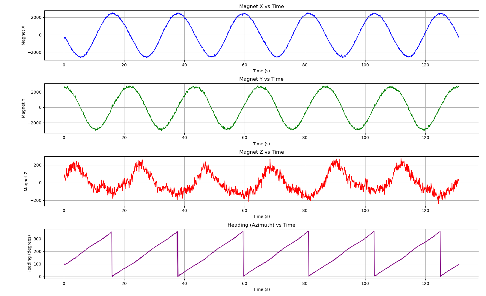

How I Designed and Built a Highly Precise Targeting Platform to Track Satellites, Planets, and Stars
Introduction
As an Aerospace Engineering student, I'm passionate about space exploration and aviation, and while actually exploring
space is a bit out of reach for me, I wanted to build a project to accurately point at objects in the sky. Anything from
satellites to stars, I wanted to be able to point at it accurately and automaticallyy, and so I built
AstroTargeter.
The key features of this project are:
- Highly precise 2DOF platform actuated by stepper motors
- Placeholder laser pointer, could be a telescope or dish antenna in the future
- Real-time astronomical calculations for versatile pointing applications
- Tightly integrated custom system with GPS, Magnetic, Accelerometer, and Gyroscope
- Correctly fuse sensor readings to accurately localize platform in the universe
- Onboard database of celestial objects and satellites
- Fully 3D print frame with off-the-shelf gears and mounting hardware
- Custom PCB for stepper motor power management, sensor interfacing, and reliability
- Onboard Raspberry Pi 4 with superior computational performance
- Advanced multi-step calibration routines to ensure accurate results
Below is a CAD rendering of the final prototype, and the final prototype itself which is a sleek and refined design that I am very proud of.


Current Project State Demo
Currently, all of the hardware is complete, and most of the software is complete as far as core functionality goes, but I have
yet to test it with a wide range of objects, and have only implemented pointing at the moon. I intend to test more objects in
the future and add it to this section when I do, but I have been prioritizing other projects. I will add a video
here in the future to show the platform in action, but for now feel free to read on to learn more about the design process.
Initial Prototype
The current device that will be discussed in-depth is actually a V2 prototype which made many improvements over the V1 prototype.
For completeness purposes, I would like to start with the V1 prototype, since the iterative design aspect of this project
is a key part in the success of the final product. The V1 prototype was made shortly after getting my first 3D printer,
and is based on a very preliminary knowledge of "good" electronic design. Even with all of these limitations,
the V1 prototype did successfully control the stepper motors to poiint in the right directions.

The initial prototype implemented most of the key requirements, including 2 stepper motors, an accelerometer
and gyroscope, as well as magnetometer. I two L298N motor drives to control the stepper motors, and a Raspberry Pi 3B.
Additionally, I solered up a proto-board to connect all the wires together, which resulted in quite a messy setup but it did work.
For the gears, I used an all-3d-printed design, which was not very reliable and had a lot of backlash, particularly
for the multi-stage gearbox for elevation control. The azimuth control was better, but not great. Additionally,
the Raspberry Pi 3B was not powerful enough for comofrtable remote-control and programming, which made the software
aspect harder to work on. Finally, I simply wasn't happy with the overall look of the prototype, and wanted to make
a much more sleek and refined design for the V2 prototype.
Improved Gears
The aspect of interation from V1 to V2 that I wanted to address was the backlash in the gears.
This was a major issue in the V1 prototype which limited the precision of the platform greatly.
I used a series of of-the-shelf gears purchased for a few dollars each, coupled with lock-collars, bearings, and
steel shafts cut to length using an angle-grinder and a vice. Although simple, the use of solid metal gears
and stabilizing bearings resulted in a signficant improvement, with effectively zero backlash in the elevation control.
The elevation gearbox is shown below.

Additionally, the azumith control was improved with a similar system. While I could not purchase a large enough gear
off-the-shelf to make both parts of the azumith system work, I was able to use a metal gear for the stepper-stage and
then 3D print the large gear with tight tolerances to ensure a snug fit. This resulted in a much more reliable and
backlash-free system for the azimuth control. The improved azumith hybrid-gear system is shown below.

Custom PCB
A big issue with the V1 prototype was the messy wiring and the lack of a proper power management system for the stepper motors.
Additionally, the L298N motor drivers would get very hot, pull more power than necessary, and are overall outdated inferior drivers to modern
options. To address this, I learned PCB design in Altium Designer and made my first custom PCB ever for this project. The PCB had
a few key functionalities:
- Power management for the stepper motors and Raspberry Pi 4
- Carrier for DRV8825 stepper motor drivers
- Interfacing with the Raspberry Pi 4
- Interfacing with the sensors
- Clean up overall wire management
The PCB rendering is shown below, along with its physical realization. The PCB was manufactured by PCBWay and the components
were sourced from various suppliers. While the design isn't perfect (my first PCB ever), it worked in all the ways I needed it to,
and I would probably only change a few small things if I were to make it again. Here is the Altium PCB layout:

And then here is the physical PCB after being soldered up and assembled with the components:

Electrical Whine Issue
One of the issues I discovered with my electrical system, actually not related to the PCB, was that the stepper motor
driver PCB's (DRV8825) were causing a lot of noise in the system, which was audible as an awful high pitched whine any time
the stepper motors were on. After extensive research and tested, I determined that the reason was that certain stepper motor
models can make a whining sound due to harmonics in the driver when the driver is set to a particular "currennt chopping decay mode".
Digging deeper in the manufacterer's datasheet and probing the driver with a multimeter revealed that the decay mode was set to "mixed",
which was causing the noise for my motors, and a more reliable decay mode for my motors was "slow". Unforunately the DRV8825 breakout
board that I was using had no way to change the decay mode, so I had to manually solder a 0.4mm wire to the decay mode pin on the DRV8825.
This was a very delicate operating, taking me an hour total for both modules, but once it was done, the noise was gone! Below is an
image to give you an idea of what I did.

Overall Frame Redesign
In addition to all of the electronic improvements made, I also made various changes and upgrades to the 3D printed frame.
It's not very interesting so I will not go into detail, but generally I did some weight reduction, aesthetic improvements,
and obviously had to redesign the frame to fit the new gears and PCB. The final frame is shown in the first image of this page.
The one thing I will say is that I chose to go with a hexagonal design for most frame components for weight-reduction as well as
stylistic reasons. Take a moment to appriciate the beauty of the hexagon, and how it is used in the frame design below.

Software
The software aspect of this project is divided into two sections. Low-level control of the stepper motors and sensors, and high-level
astronomical calcualtions and interfacing. Since this platform does not need absolute realtime control, I opted to use Python for
ease of development and readability. I built a custom stepper motor controller which interfaces with the DRV8825 drivers and
allows calculations for microstepping, gear reductions, constant acceleration and decelleration, precise positioning, and
dynamic speed limits for movements. This was integrated with a sensor fusion library that I also made custom to integrate
all the readings from the magnetometer (to measure Earth's magnetic field as a digital compass), the accelerometer and gyroscope
(to measure the platform's orientation relative to Earth's surface), and the GPS (to measure the platform's location on Earth and
account for effects like magnetic declination). While I have working demos of all these aspects, they are not yet integrated
in a good way, so I will leave out the code for now, but I will publish everything on GitHub once I finalize the project
to a state that I am happy with.
Calibration
One of the most important aspects of this project is the calibration. Since the platform is meant to be highly precise, and I'm using
admittedly cheap sensors and motors, I needed to implement a multi-step calibration routine to ensure that the platform knows where it is
to a high degree of accuracy, not just precision. The accelerometer/gyroscope is calibrated every time the platform is turned on, by
turning itself in increments of 90 degrees and measuring the change in gravitational field detected it can accurately determine its
orientation since it uses differences in measurements rather than absolute values. The magnetometer is calibrated once
by turning the platform in multiple full circles and continuously tracking the magnetic field, then averaging the results to get a
an accurate offset and scale factor for the magnetometer. The GPS is assumed to be accurate enough for my purposes, but I do
implement an averaging filter. Below is an image of some calibration data from the magnetometer, showing the raw data from each axis,
and then the calibrated compass heading in the final plot.
